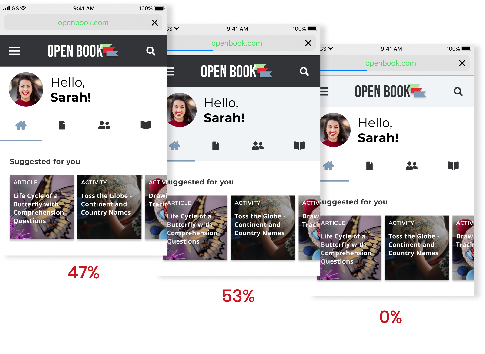
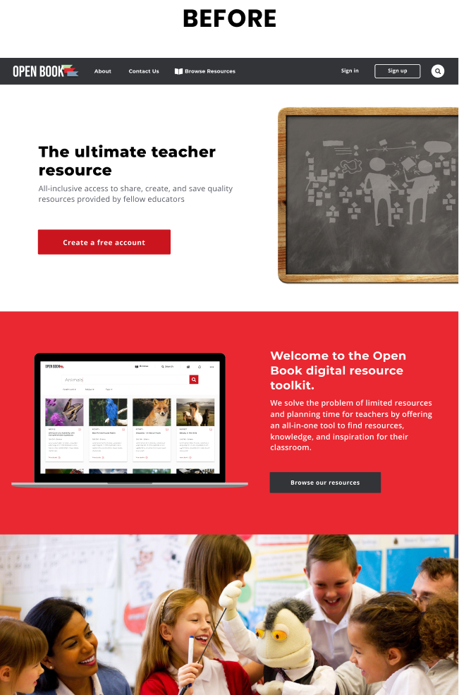
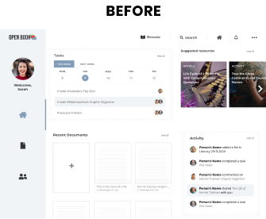

My Roles
UX Design
Visual Design
Brand & Identity
Deliverables
Competitive Analysis
User Survey
Concept & Identity
User Personas
User Stories & Flows
Wireframes (low - high)
Moodboard & Style Guide
High Fidelity Mockups
Interactive Prototypes
Specifications
TIMELINE
5 weeks
TOOLS & SOFTWARE
Figma
User Stories & Flows
InVision
Google Forms
Draw.io
Usability Hub
Problem
TEACHER SHORTAGE
Why are teachers leaving the profession?
Often, teachers are left feeling overloaded, overwhelmed, and defeated due to limited planning time and lack of resources provided by schools. Teachers are in desperate need of a consistent and reliable resource that is quality-focused and easily accessible to help them get their job done well.
Solution
open book
A responsive web application where users can find ready-to-use resources and collaborate remotely with their team to complete tasks.

Ideation
IDENTIFYING A PROBLEM
A cloud storage and collaboration tool would most benefit a working professional or student, so I decided to look there first. Which professions have a low success or satisfaction rate? I quickly realized a widespread pattern of unhappiness amongst teachers. Teacher shortage is a massive problem and isn’t going away anytime soon.
Bingo. A target audience was born.
User Survey
HIGHLIGHTS
93%
of participants said that organization is important to their profession
70%
of teachers feel that they never get enough planning time
7%
of teachers actually use textbooks for classroom instruction
REVEALED CHALLENGES
Limited planning time
Heavy workload
Too many platforms
Resources are hard to find
Spending money out of pocket
Quality of resources
Competitive Analysis
I then conducted an analysis of competitors in order to understand the opportunities and threats of this market, and analyze the strengths of each product to determine what to include in my own.

Browsing and inspiration-driven features
Large storage capacity and interface simplicity
Search features and vast content library
User Personas
Based on research and survey data, I identified 2 main users of the product. Although both personas are teachers, they each have unique goals, frustrations, wants, and needs.
Leslie
Age 25 / 3rd Grade Teacher
Goals
Create a better work-life balance by spending more time with her husband and son
Easily collaborate with co-workers and divide tasks amongst the team
Become more organized in regards to storing lesson plans and materials
Frustrations
Limited time for planning due to too many team and faculty meetings
Spends hours creating materials because of lack of resources that are provided
Completing everything on her own; not fully utilizing the benefits of teamwork
Amy
Age 40 / 6th Grade Teacher

Goals
Learn and incorporate new strategies to use in her classroom
Find engaging and rigorous lessons that align with state standards
Communicate with other teachers during the content development process
Frustrations
Feels pressured to find quality resources because the school is not providing them
Quality of materials found on external sites are not always reliable
Limited planning time at school decreases the amount of collaboration with other teachers
Key Takeaways
The age of school-issued textbooks is long gone. Teachers don’t tend to use them because the content is normally very outdated, don’t appeal to students’ interests, or align with the state standards.
Teachers are given a small amount of time to plan during the day. Most teachers claim that their planning block is usually overridden by parent conferences, student make-up work, and other school-related meetings. Without planning time, teachers struggle to collaborate with their team and are left to complete tasks alone.

User Stories
DEFINING THE SCOPE
Research detailed thus far has helped me better understand the user’s needs and create a Minimum Viable Product (MVP). I then broke the MVP down into 4 epics and disassembled each epic to create User Stories. These were used to prioritize tasks in regards to the needs of the users and create a reference throughout the project to ensure a consistent scope.
MVP
Teachers want to browse and save quality, ready-to-use materials AND collaborate with teammates to complete tasks involved in the lesson planning process.
high priority tasks
Browse content by subject & grade level
Search for content
Quickly save content into a folder
Create a file or folder
Share content with a 1+ people
Edit a file saved from the web
Edit an existing file
Access team to-do list
Flows and Sitemap
Flows
Flow diagrams for each high priority task were created to demonstrate how the user will navigate through various pages: Landing, Onboarding, and Home. First sketching, then degital. These flows are crucial to identifying key actions within the app and which screens to focus on first. At this stage, they’re far from set and stone, but lay a solid foundation.
Sitemap
I then used the research data, user stories, and user flows to create a sitemap in order to organize each destination in the user flows. The sitemap was used as an outline to create the content strategy, which helped me focus on clarity and lay down a solid foundational structure of the project before moving forward.

Wireframes
LOW FIDELITY
With now a clear focus and solid foundation, I began sketching out pages within the user flows in low fidelity. I always start with pencil and a sketchpad to allow for rapid iterations of wireframes.
HIGH FIDELITY
After tweaking and adjusting, I brought the wireframes to life in Figma by creating high fidelity digital versions of the wireframes for testing purposes in order to identify if there are any complications with the UX.
Usability Tests
I created a clickable prototype of the wireframes in InVision and conducted 3 usability tests, two of which were remote and one in-person. Feedback from this first round of testing was crucial before executing high fidelity designs.
I decided to test two teachers (to align with the target audience) and one designer (to pick their brain about best practices). User feedback prompted a series of iterations in between each usability test.
Tasks
Sign up for an account
Create a new file
Save a file from the web
before testing
Landing > Browse > Dashboard
after testing
Landing > Dashboard > Browse
Key Takeaways
USERS NEED A DASHBOARD. They expected to see information about their personal files and team information on the home page, opposed to a large grid of resources to browse (like Pinterest). The feedback aligns with the MVP, as the file and team features are in fact high priority tasks.
THE LANDING PAGE CAN BE SIMPLIFIED into one page. Only 1 user in this round of testing clicked through the tabs (resources, educators, our team) to view more information.
REVISE THE TOP NAV BAR after creating the new dashboard layout, in order to focus on actions important to usability.
ADD MORE INFORMATION TO CARDS on browse page to provide the user with more information without having to click.

Concept & Identity
The name Open Book came about when thinking of a phrase educators use when giving their students a test. When a test is “Open Book” it means that you are permitted to use any resources available to you to complete the assessment. An open book test requires a lot of preparation and studying beforehand so that you can find the information quickly.
Many times this process involves sticking tabs on pages to save important information, which is why Open Book’s logo includes 3 stacked tabs symbolizing preparation and collaboration.
colors
I wanted to achieve a feeling of professionalism, but also wanted the product to feel motivating and friendly, which is why Open Book makes use of red, light blue, and a dark grey as primary colors. Subtle pops of red represent creativity and activity to make users feel energized and excited about planning engaging lessons for their students.
typography
Montserrat and Open Sans, geometric sans-serif typefaces, are used to create high readability with little distraction.
The dark grey font paired with light blue and white elements creates a clean, simplistic atmosphere with a primary purpose - to foster productivity.
HEADER/MONTSERRAT
ABCDEFGHIJKLMNOPQRSTUVWXYZ
ABCDEFGHIJKLMNOPQRSTUVWXYZ
BODY/OPEN SANS
ABCDEFGHIJKLMNOPQRSTUVWXYZ
ABCDEFGHIJKLMNOPQRSTUVWXYZ

Preference Testing
RECENT DOCUMENTS
The initial design included a list view in order to make the Dashboard more compact. A preference test was given to be sure that this decision aligns with the users’ desires and needs.
The layout decisions of the Recent Documents section is confirmed as data shows that users do in fact appreciate the list view over the grid view. User feedback suggests that the list view provides better usability when locating files and folders recently opened.
mobile navigation
While the original iteration is clean and simple, data insists that users actually prefer the light blue background color of the secondary navigation because it breaks up the navigation. I decided to align the design with the feedback because it will increase the usability and more closely resembles the desktop version.
card
The initial design includes an angled edge that resembles the same shape as the logo tabs, yet rotated 90 degrees. The purpose of this was to add a unique element that played off of the Open Book logo. While this all seems like a clever idea, testing actually proved that users appreciate the straight edge versus angled.
Feedback suggests that people care more about the content being clean and visible and not so much about the “unique” design.
Prototype
Once the high fidelity mockups were close to completion, I validated the designs by testing 3 more users with my working Invision prototype. A series of touch ups were done until the following goals were met:
goals
Design aligns with brand characteristics
There are no complications in the UX
The user completes browse, save,
and edit task flows with ease
Key Takeaways
REDESIGN THE LANDING HERO AND FIRST SECTION of the landing page to make users understand the concept of Open Book easier.
Add subtle pops of red throughout the dashboard to increase cohesiveness.
redesign the filter buttons to be more intuitive and user-friendly.
decrease information on sign up form to enlarge input fields and shorten the process.
A MONUMENTAL STEPPING STONE IN MY CAREER
From ideation to completion, Open Book has undergone many changes and iterations. This project started without a target audience, product name, or even a problem in mind, and ended with an established solution. Taking a vague concept and turning it into tangible website on my own for the first time was at times overwhelming, but a great learning experience and monumental to my career as a Designer.
NEXT STEPS FOR THIS PROJECT
The deliverables are packaged up nicely for the development team, with all of the essential elements exported as both pngs and svgs and organized neatly in separate folders.
I would have liked to work more on the animation, but due to a time constraint, I stuck to the project MVP and focused on the solution. If time were free, next steps for this product would begin with adding subtle and effective microinteractions and designing a mobile native app version.
What I learned
Test. Test. Test. This project taught me the emphasis and importance of testing. This process is not about which design I prefer, it’s which one the user prefers and why they prefer it. I can make assumptions, but they need to be tested and proven in order to be valid. Initially, I assumed the home page design could resemble that of Pinterest’s, but users wanted to see a focus on all of the app features, such as files, teams, and activity, not just browsing. So a change to the flow needed to be made in order to align the app with user preferences.
Looking back, I spent too much time on early deliverables, specifically digital wireframes. They went through many iterations after testing that could have been prevented with a quick initial paper prototype.
Key Takeaways
The age of school-issued textbooks is long gone. Teachers don’t tend to use them because the content is normally very outdated, don’t appeal to students’ interests, or align with the state standards.
Teachers are given a small amount of time to plan during the day. Most teachers claim that their planning block is usually overridden by parent conferences, student make-up work, and other school-related meetings. Without planning time, teachers struggle to collaborate with their team and are left to complete tasks alone.